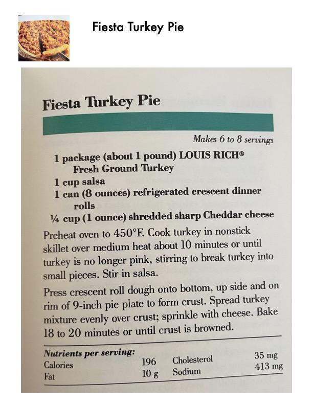

Fiesta Turkey Pie

Original cookbook page 220
A quick and easy turkey pie using ground turkey, salsa, and crescent roll crust.
Prep: 15 minutes • Cook: 18-20 minutes • Total: 35 minutes
Ingredients
- 1 package (about 1 pound) Louis Rich® Fresh Ground Turkey
- 1 cup salsa
- 1 can (8 ounces) refrigerated crescent dinner rolls
- ¼ cup (1 ounce) shredded sharp Cheddar cheese
Instructions
- Preheat oven to 450°F.
- Cook turkey in nonstick skillet over medium heat about 10 minutes or until turkey is no longer pink, stirring to break turkey into small pieces.
- Stir in salsa.
- Press crescent roll dough onto bottom, up side and on rim of 9-inch pie plate to form crust.
- Spread turkey mixture evenly over crust; sprinkle with cheese.
- Bake 18 to 20 minutes or until crust is browned.
📝 Recipe Notes
Nutrients per serving: 196 calories, 10g fat, 35mg cholesterol, 413mg sodium.
Recipe #220 from collection